Human Computer Interaction:
Perception
2024-01-25
Week TWO
Today
- Q and A from last time
- Signups for Article Presentation, Design Critique, Discussion Leading
- Groups
- Perception
- Norman (2023)
- Framer tutorial
- Figma tutorial
Q and A from last time
Bringing it together
How does this material tie holistically into HCI and Design (Thinking)
Natural vs Artificial; Old vs New
This leads me to ask? Is the question of natural vs artificial in the same category as the prompt - “Is old considered inferior?” A lot of times people attribute natural to being superior and artificial to inferior. Although one can argue that ‘old is superior’ in some situations but for some reason and maybe psychologically, we tend to resist new technology and designs. We always lean towards the old way of doing things.
Reading!
Looking forward to reading Norman’s new book, Design for a Better World.
Materialism
Is it possible to survive in today’s world without contributing to materialism in ANY way?
Combating society’s ills
What can we do in society to combat the issues brought up today? In order to fix America, we need change. However, any change that is suggested is labeled as socialism. Examples include improving education, improving healthcare, more regulation to ensure a cleaner environment. How much does societal and cultural perspectives shape our understanding of what is considered “modern”?
Questions lead to design?
I am wondering where some of the questions lead to (eg. artificial vs natural), and how they are gonna effect design.
Regulatory environment
If we start focusing on Humanity Center Design, does this mean we need to start building out regulations that are ethical for design? How do you know what is ethically correct, when there are 8+ different ethical standards out there?
Difference between humanity and human
I am curious how humanity-centered design differs from human-centered design. I expect I will learn more reading Norman, 2023.
In class presentations
Four people signed up for in class presentations and none for today. Let’s sign up the rest now.
Groups
Are you all in groups now? Are you satisfied with your groups? Let’s make sure you’re on track right now.
Perception
Human Capabilities
- What are our limits?
- What are we on average?
- What state are we in?
- …
We can think about human capabilities from different perspectives. Can you think of others besides the list above?
Limits, averages, and states
What can you say about the previous list? For example, limits might include the limits of what a person can see or remember. The average might include what “most” people can see and remember, whatever “most” means. The state we are in might be bright sunlight or a loud nightclub or sitting in front of a computer in a dark room, all of which affect our limits temporarily.
Some limits
- Magical number seven, from Miller (1956)
- Resolving power of the human eye in lines per inch at distance
- Color blindness
Chunking
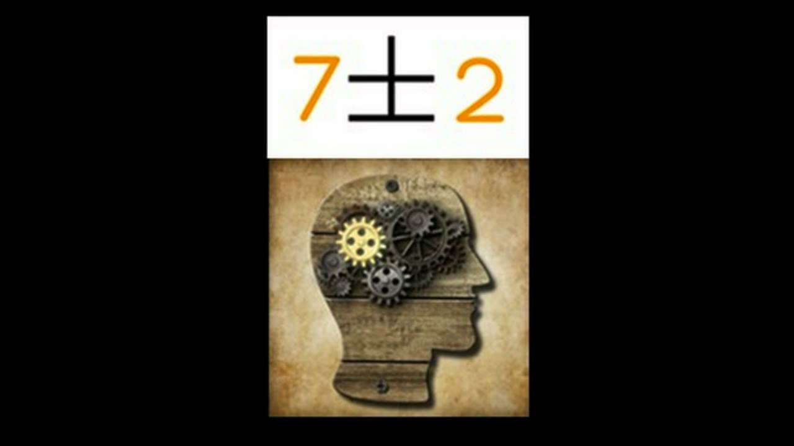Details of chunking
The preceding list shows several common limits you might need to be aware of when designing digital artifacts. Miller (1956) found that people chunked items in short term memory into groups of seven, plus or minus two, as shown in the previous frame. That might suggest a limit for what you ask people to remember.
Jobs focused public attention on resolving power
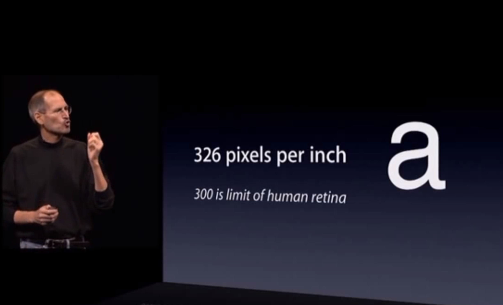A typical test for color blindness
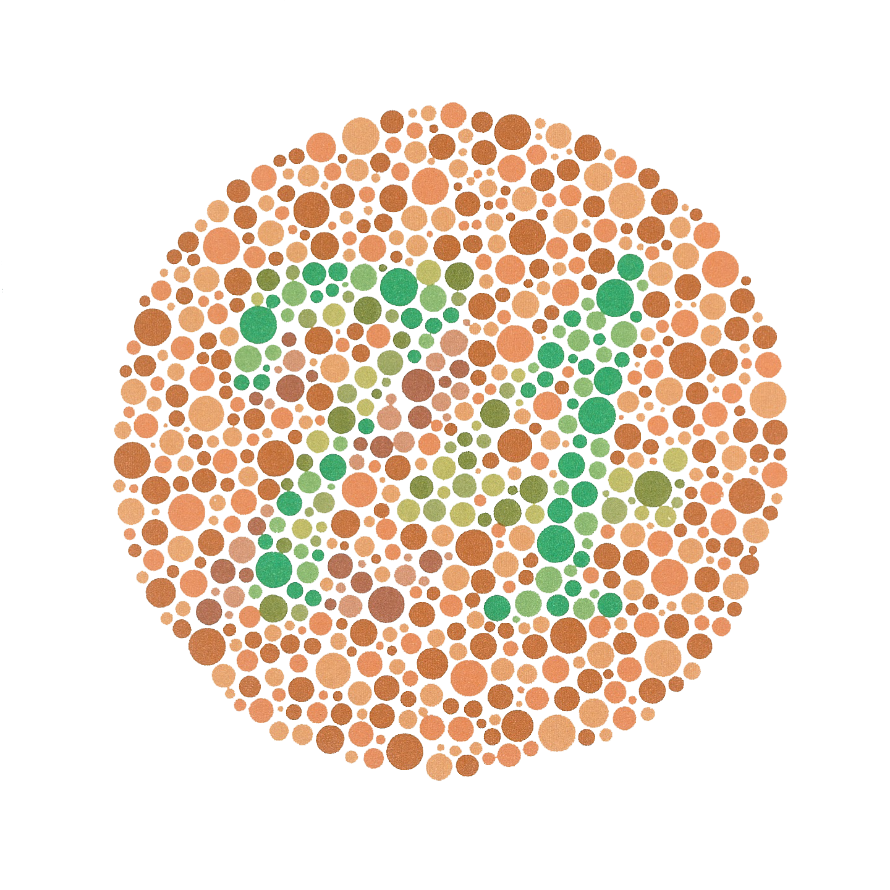Some findings of Gestalt psychology, 1927
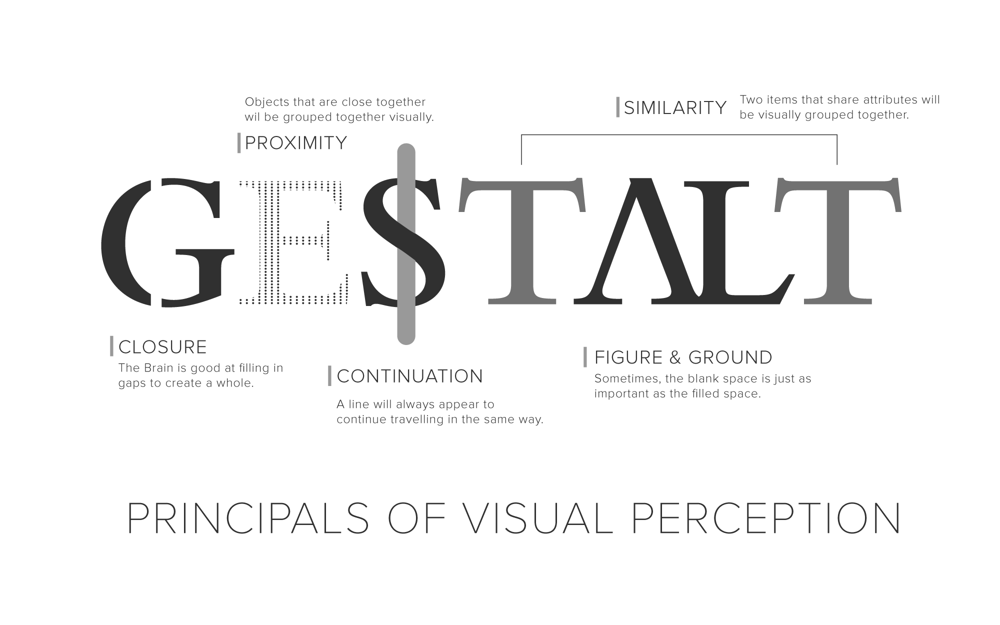A view of Gestalt principles

More on Gestalt principles
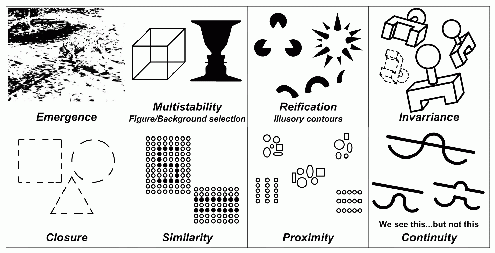An example of Colorbrewer usage
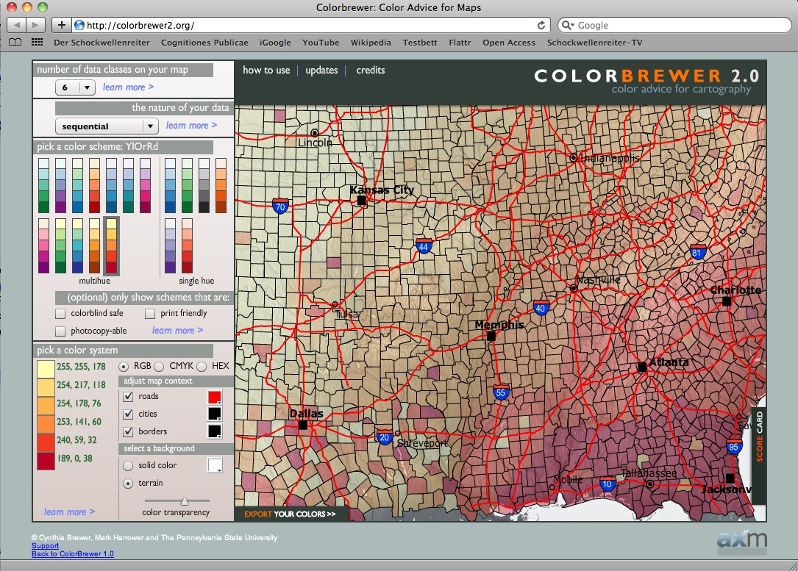You don’t notice the gorilla when counting
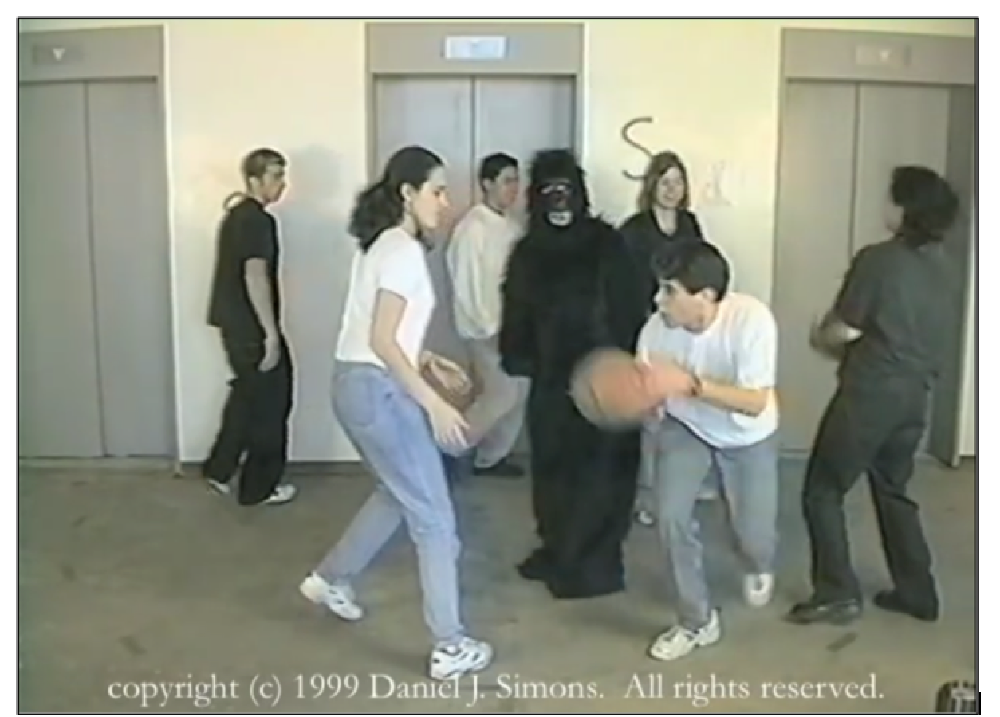An influential and controversial book
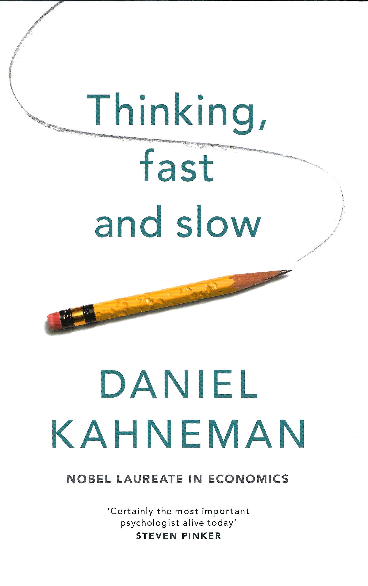Being watched by a picture influences you
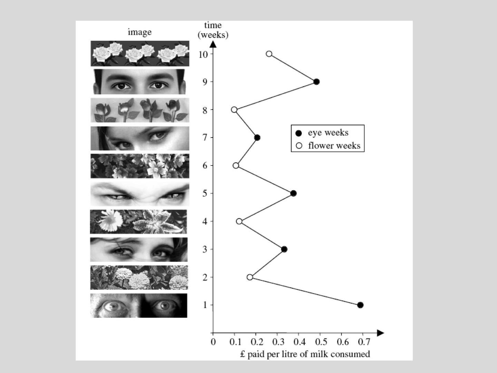Two systems controlling you
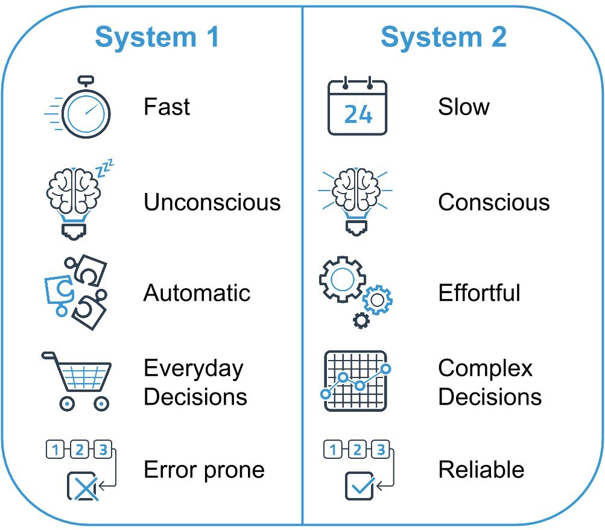Causes and consequences of cognitive ease
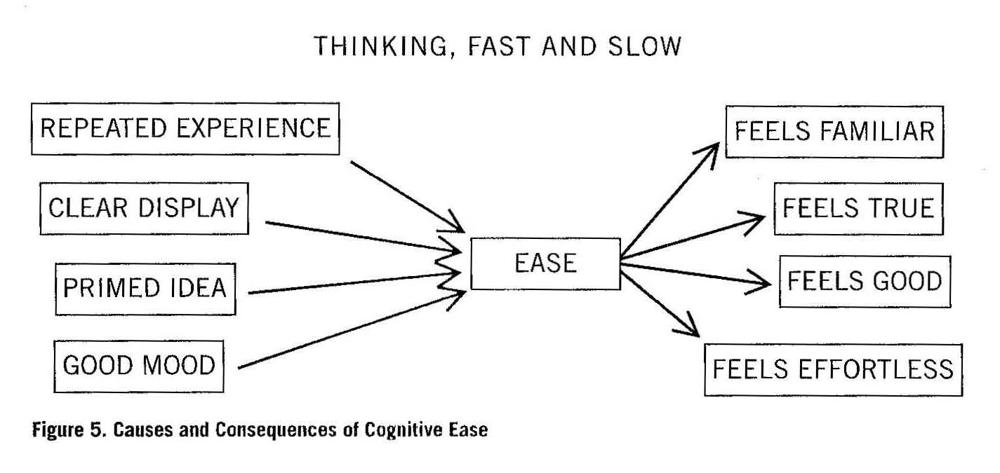Critique of Kahneman
The common critique of Kahneman is that the experiments can’t be replicated, in particular much of the research on priming. For example, a blog post at replication index summarizes some of the critiques.
An example of an optical illusion
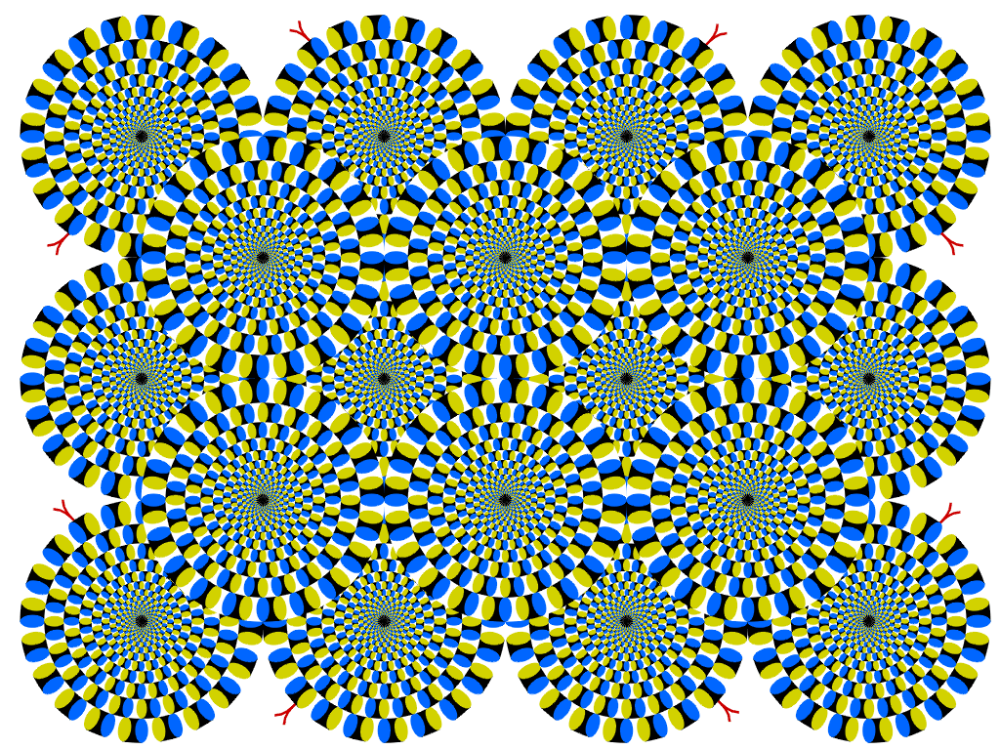Readings
Readings last week included Hartson and Pyla (2019): Ch 1, 2, 4 and Norman (2013): Ch 1. These are pretty serious readings and you need to carve out time to devote to them. In addition, the readings in future weeks have to be done before class, not after. We’re only saving these readings for after class because it’s the first week.
Readings this week include Johnson (2020): Ch 1–5
Assignment
Milestone 0
Norman (2023), II: Meaningful
Meaning is elusive
- Specialized terminology is legalistic, technical, governmental.
- Unintentional lack of clarity (experts addressing public)
- Intentional (software licenses, web-based accounts)
- Methods: tiny windows, use of all uppercase text
Scientists explaining climate change
- Scientists dwell on facts that don’t grab attention
- Others make dramatic demonstrations, e.g., Manhattan’s painted boundary
- Norman advocates simplifying language to explain complexity
- Designers should use rough sketches before making detailed designs
Measurement
- In physical science, measurement is an essential first step
- People try to measure productivity because it’s easy to measure
- Productivity measures don’t include quality
- Not everything that can be counted counts, and not everything that counts can be counted
- Difficulty, expense prohibit many measurements
- We measure what’s easy and cheap to measure and what matters to the ruling class
Measuring what matters to people
- Hard to do in a lab if including context
- Hard to replicate if context is included
- Scientists often measure young (WEIRD) university students
- Economists use wrong underlying assumptions, e.g., rational behavior
- Economic measures often ignore disease, natural disasters, wars, and trade barriers
Economic measures
- GDP hides progress in health, education, and happiness indices
- Assumption: people maximize utility! Do you believe that?
- Satisficing (Nobel prize winning concept) violates utility maximization
- Manipulation is everywhere, e.g., three item choices
- Marketing is manipulation
Cost-benefit analysis and risk management
- Use money as standard for comparison
- Yet one cost is loss of human life
- Hard to evaluate as money, yet people do in effect
- Norman says to stop using money as the standard
Values of Humanity vs Artificial Measures
- Cost Benefit Analysis and Risk Management tend to favor more expensive buildings, businesses, and homes
- Wealthy always win cost benefit analyses and risk mgt analyses
- If low-income people lose their homes, they may lose their jobs as a result
- Are people equal in the eyes of cost benefit / risk mgt? No, says Norman
GDP
- Alternatives require subjective measures
- Objective is “better” than subjective even though the things you most care about in the world are probably measured subjectively
- One article said GDP was up, another said people were down … Why the discrepancy?
- Norman says it’s because GDP has nothing to do with our lives
Criticisms of GDP (top three)
- Emphasizes material output without considering overall well-being
- Counts cost and waste as economic benefits
- Summarizes economic status of a nation as a single number, hiding complexity: opaque, invisible, mysterious, secretive, confusing
- Spending measured by GDP includes causing pollution and cleaning up pollution, as well as large police forces and repairing broken windows
Replacing GDP
World Economic forum offers five measures
- Good jobs
- Well-being
- Environment (including sustainability)
- Fairness (and equity)
- Health
Norman’s list
- Inclusiveness
- Resilience
- Education
- Societal values
- Quality of governance
- Happiness
- Freedom from hunger
Other measures
- Gini Index
- GPI (Genuine Progress Indicator)
- HDI (Human Development Index)
- Unfortunately, all use money as the basis
Measurement scales
- Ratio (e.g., height, weight, Kelvin temperature)
- Interval (e.g., Celsius temperature, Fahrenheit temperature)
- Ordinal (e.g., apples ordered by redness, Mohs hardness scale)
OECD measure of a better life
- Organization for Economic Cooperation and Development
- Eleven categories of items
- Website lets you manipulate importance of each category
Information Dashboards
- Often work well at a glance
- Automobile dashboards have changed over time
- Helpful when you need to measure numerous items at the same time
Behavioral Economics
- Formerly disavowed by utility theory economists
- Proponents won Nobel Prizes: Herbert Simon, Daniel Kahneman, Richard Thaler
- Now more mainstream
Stories are better than numbers
- Measurements give facts
- Stories provide meaning
- Meaningful stories are easy to remember
“It doesn’t matter how complex something is. If people find it meaningful and understandable, they will judge it to be “simple.” “Complexity is a fact of the world, whereas simplicity is in the mind.”
Excerpt From Design for a Better World Don Norman
Tutorials
References
END
Colophon
This slideshow was produced using quarto
Fonts are League Gothic and Lato